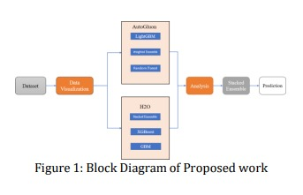
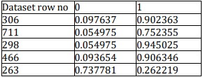
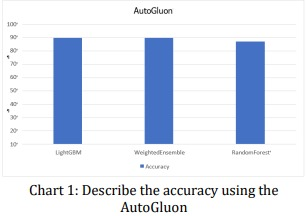
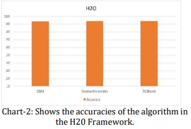

Heart Disease Prediction Using AutoML Frameworks
Medasani Hari Kumar, Parasa Rishi Kumar, Kottamasu Sai Anila, Doppalapudi Sriram, K.Suvarna vani
Department of Computer Science & EngineeringV R Siddhartha Engineering College
Abstract
One ofthe most difficultissues inmedicine is predicting heartillness. Heart disease is becomingincreasingly common, and being able to predict such diseases in advance is critical. This is a challenging diagnosis that needs to be made correctly and swiftly. In this paper, we propose AutoML frameworks for predicting heart diseases, such as AutoGluon and H20. The dataset contains 919rows and12 columns withattributes such as Age, Sex, Chest Pain Type, RestingBP,Cholestrol, FastingBS, RestingECG, MaxHR, ExerciseAngina, Oldpeak, STSlope. While training the data AutoGluon uses LightGBM, RandomForset, and WeightedEnsemble provide certain accuracy and H20 uses XGBoost, GBM, and StackedEnsemble to provide certain accuracy among them H20 provides better results.
Keywords: : Heart Disease, AutoML, Random Forest, WeightedEnsemble, StackedEnsemble, Prediction
Introduction
Heart illness has gotten a lot of attention in medical research among the numerous lifethreatening disorders. Heart disease diagnosis is difficult, but it can automatically predict the patient's heart status,resulting in more successful therapy. The indications and symptoms of the patient, as well as a physical examination, are widely utilized to identify cardiac disease. Tobacco use, high blood cholesterol, a family history of cardiovascular disease, obesity, high blood pressure, and physical inactivity are all risk factors for heart disease. Providing high-quality services at reasonable prices is an important issuefor medical institutions such as hospitals and clinics. Properly diagnosing patients and providing appropriate treatment is an example of quality service. The public database on heart disease includes both numerical and category data. These records are cleaned and filtered before further processing to remove extraneous data from the database. Cardiovascular disease (CVD) is the largest cause of deathworldwide, accounting for an estimated 17.9 million deaths per year, according to the World Health Organization.
You can save lives by identifying the people who are most vulnerable to cardiovascular disease and getting the right treatment. It is important to identify the cardiovascular disease as soon as possible so that treatment can begin with counseling and medication. For this project, I used AutoML like Auto Gluon and H20. The framework makes it very convenient and improves the efficiency of the model. Automated machine learning refers tothe process of applying a machine learning (ML) model to a realproblem through automation (AutoML). In particular, it automates machine learning model selection, assembly, and parameterization. Automated machine learning processes are easier to use than hand- coded algorithms and often give faster and more accurate results. The AutoML software platformmakesmachine learning more accessible to companies that do not have a dedicated data scientist or machine learning expert. AutoML is important because it detects watershed periods in artificial intelligence andmachine learning. AI and machine learning have been called "black boxes." To summarise, reverse engineering machine learning algorithms is difficult.They increase the efficiency and processing power required to produce results, but it can be difficult to grasp how the algorithm generated those findings.As a result, if the model is a black box, predicting the outcome can be challenging, making it more difficult to select the best model for a given situation. AutoML helps to liberate machine learning fromthe black box by making it more approachable. Those who undertake this duty must comprehend the algorithm's internal logic and how it connects to the actual scenario.
Related Work
In [1] Heart Disease prediction is a difficult task in clinical data analysis. Neural networks and Machine learning appear to be more favorable in benefitting decision-making and predicting from largeamounts of healthcare data. We noticed that various features had been used in the latest machine learning model developments. In thiswork, they have proposed ML techniques for predicting cardiorespiratory disease using features. In terms of accuracy, the decision tree classifier outperformed the others. We used various algorithms, including Neural Networks, KNN, Naive Bayes, Logistic Regression, DT Classifier, and XGB classifier, to determine which technique predicts cardiovascular disease more accurately.
In [2] Fatma Zahra Abdeldjouad and colleagues proposed a new hybrid model for predicting heart disease. Adaptive Boosting, Logistic Regression, Fuzzy Unordered Rule Induction, Genetic Fuzzy System-LogitBoost, Multiobjective Evolutionary Fuzzy Classifier, and Fuzzy Hybrid Genetic Based Machine Learning were among the techniques employed.
In [3] Pattern prediction for disease prevention and management is a very hard and important requirement in the medical area. They proposed an ML scheme for predicting the likelihood of heart disease using the different types of algorithms inthis article. Fivealgorithms areused in this framework: Random Forest, Hoeffding Decision Tree, Nave Bayes, SVM, and Logistic Model Tree. The first step is to transform the textbased data into a visual format using a variety of data visualization techniques to identify previously unknown trends. The next step is to use feature selection to reduce verbose and insignificant data. This will greatly improve the prediction rate. The third step is to train the model anduse classification techniques to make predictions for the test dataset. The last step is to suggest ways toincrease the predictive value of the method.
In [4] P. Ramprakash et al. created and proposed a framework and model built with a deep neural network and an x^2-statistical model. They discovered the principles of predicting patients' risk profilesusing clinical data parameters during this investigation. They have also eliminated the problem of fittingand over-fitting data and for the efficiency of the data they have used ANN and DNN algorithms and for accurately predicting heart disease.
Methodology
To forecast heart illness, the proposed study analyses categorization methods and conducts an overall performance analysis. The primary purpose of the investigation is to determine whether or not a patienthas a heart illness. We looked for any null values and duplicate values are present in the dataset. To know the in-depth analysis of the dataset, we visualize the dataset to know how the different attributesare related to the target variable. Different statistics such as mean, std, min, and max are visualized andplot graph with the among attributes also with the target attribute (heart disease). The idea is to utilize AutoML frameworks such as Auto Gluon and H20 and then analyze both frameworks and utilize the best algorithm among them. This health information was provided by a professional who received it from the medical records of their patients. The use of different AutoML frameworks provides a more comprehensive understanding of how AutoML works. The data is fed into two different frameworks such as Auto Gluon and H20. Auto Gluon uses different algorithms such as LightGBM, Weighted Ensemble, Random Forest and H20 uses models, Stacked Ensemble, XGBoost, and GBM. After the successful training of the models, an analysis was done on both the frameworks among them Stacked Ensemble provides better accuracy.

Figure2 shows aUML diagram. Use casediagrams to illustrate the high-level features and scope of the system. These figures also show how the system and its various actors interact. The use cases and actors in the Use Case Diagram illustrate the system's characteristics and how the actors interact with it, but not how the system works within.
Algorithms
In XGBoost, gradient-boosted decision trees are implemented. The XGBoost model dominates several Kaggle competitions. In this process, the decision trees were created in sequence. Weights are very important in XGBoost. All independent elements are weighted and entered into the decision tree that predicts the outcome. Variable weights are incorrectly predicted as the tree grows and these variables are passed. These variables are passed to the second decision tree. The results of many of these classifiers/predictors are then integrated to produce a more powerful and accurate model. It can be used to tackle classification, ranking, regression, and custom prediction issues. Light GBM boosting framework is based upon decision trees which boosts the efficiency of the model while using less memory. It uses two novel methods; one is Exclusive Feature Bundling secondis Gradient-based One Side Sampling to address the shortcomings of typical GBDT frameworks' histogram-based approach. GOSS and EFB are the two methods that are described here, which comprise LightGBM Algorithms features. They collaborate to ensure that the model runs smoothly and gives it an edge over a competing framework of GBM.
In ensembled approaches of machine learning, many algorithms for learning are utilized to offer thebest-anticipated performance other than any of the individual learning algorithms. Ensembles are usedin several of today's most prominent machine learning methods. Gradient Boosting Machine and RandomForest are two examples of ensemble learners. Bagging (for an instance, Random Forest) and boosting (for example, Gradient boosting Machine) were ensembling procedures that take a set of feeblelearners (for example, decision tree) and combine them into a single, powerful learner. H2O's Ensemblemethod was a supervised ensemble ML algorithm that stacks several prediction algorithms to discover the most effective combination. Every supervised model presents H2O, including Stacked Ensemble, support regression, and multiclass classification binary classification.
Each ensemble member's contribution to a forecast can be weighted based on their trust or performance on a holdout dataset with weighted average ensembles. Model averaging is a technique forensemble learning in which each member of the ensemble makes an identical contribution for prediction. In a weighted ensemble, which is a continuation of the averaging of the model ensemble, each member's contribution to the final forecast is weighted according to the model's performance. The weights in the taken model are very small positive integer numbers, and the total of every weight equals one, indicating the degree.
Results
By using these AutoML frameworks like AutoGluon and H20, we obtained accuracies of different algorithms and we took the highest accuracy giving algorithm as our final prediction. The Prediction using AutoGluon was shown in Table 1.
The above table represents the random prediction obtained using the AutoGluon framework. Dataset row number represents the random row number of the dataset obtained in the final prediction. Whereas“0” represents the chance of not getting heart disease and “1” represents the chance of getting heart disease.
Comparative analysis between AutoGluon and H20 frameworks:
The below chart shows the Accuracy of the AutoGluon framework used for the prediction.
The below chart describes the algorithms and their accuracies used in the H20 framework for the prediction
Conclusion
In this study, we developed a heart disease prediction model that analyses a patient's medical history topredict whether or not they would develop heart disease. We have done this work using three modulesthe first one being the data preprocessing method, the second one is building the model using the AutoGluon/H20 framework and the last one is updating and predicting
The AutoGluon framework uses 3 algorithms, they are LightGBM, Weighted Ensemble, and Random Forest which helped us to obtain an accuracy of 89.5 percent. While in the H2O framework there are three algorithms, they are Stacked Ensemble, XGBoost, and GBM, and using the H20 Framework, wewere able to obtain the highest level of accuracy, 93.7 percent.
In the future, we would like to consolidate various datasets to get more views, select the appropriate attributes to improve performance and run additional tests.
References
- A. Nikam, S. Bhandari, A. Mhaske and S. Mantri, "Cardiovascular Disease Prediction UsingMachine Learning Models," 2020 IEEE Pune Section International Conference (PuneCon), 2020, pp. 22-27, doi: 10.1109/PuneCon50868.2020.9362367
- Abdeldjouad, F.Z., Brahami, M. and Matta, N., 2020, June. A hybrid approach for heart disease diagnosis and prediction using machine learning techniques. In International conference on smart homes and health telematics (pp. 299-306). Springer, Cham.
- P. Motarwar, A. Duraphe, G. Suganya and M. Premalatha, "Cognitive Approach for Heart Disease Prediction using Machine Learning," 2020 International Conference on EmergingTrends in Information Technology and Engineering (ic-ETITE), 2020, pp. 1-5, doi: 10.1109/icETITE47903.2020.242.
- P. Ramprakash, R. Sarumathi, R. Mowriya and S. Nithyavishnupriya, "Heart Disease Prediction Using Deep Neural Network," 2020 International Conference on Inventive Computation Technologies (ICICT), 2020, pp. 666-670, doi: 10.1109/ICICT48043.2020.9112443.
- Reddy, K.V.V., Elamvazuthi, I., Aziz, A.A., Paramasivam, S., Chua, H.N. and Pranavanand,S., 2021. Heart Disease Risk Prediction Using Machine Learning Classifiers with Attribute Evaluators. Applied Sciences, 11(18), p.8352.